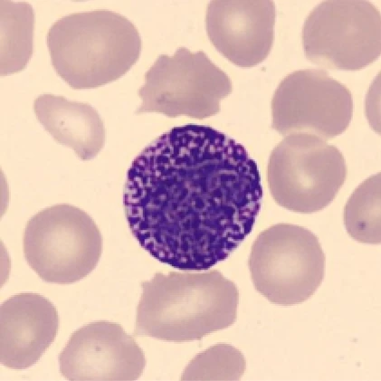

TEACHING ILLUSTRATION
BONE MARROW
Early granulocyte precursors
After commitment to this lineage, immature blast and promyelocyte stages begin building the cell’s granule equipment.
Rare in blood. Loud in signaling.
Basophils are uncommon circulating cells that release histamine and other signals. They participate in allergic responses and some forms of parasite defense.

Coarse, dark granules can partly hide the nucleus.
Look between the granules for its outline. Basophils are usually the least common of the five blood-film categories.
Choose a stage to see what changes.
After commitment to this lineage, immature blast and promyelocyte stages begin building the cell’s granule equipment.
Characteristic granules become recognizable as the cell specializes along its own lineage.
The nucleus becomes indented and then more lobed as maturation proceeds through metamyelocyte and band forms.
Coarse purple granules fill the mature basophil and may obscure its nucleus.
Simplified, grouped granulocyte stages after lineage commitment. Eosinophils, basophils, and neutrophils are separate lineages. All stages here are teaching illustrations, not micrographs.
Some activation occurs when an antigen links IgE antibodies attached to the cell surface.
Histamine and other products help change blood-vessel behavior and recruit an immune response.
Signals such as IL-4 help guide other immune cells. These responses can contribute to allergy.